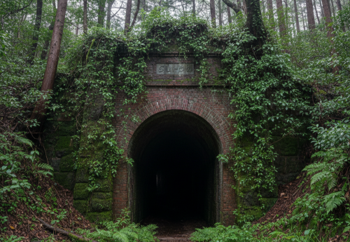
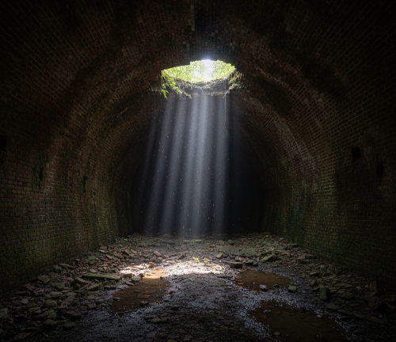

皆様、お疲れ様です。管理人の「おっきー」です。
今回は、地元でも有名な心霊スポット……ではなく、土木遺産としての価値が高い「旧・翠越隧道」へ行ってまいりました。

入り口はご覧の通り、自然に還りつつあります。 一歩中に入ると、外の蒸し暑さが嘘のようなひんやりとした空気が漂ってきます。 数十年前に役目を終えたこの構造物が、今やひっそりと「無」を受け入れている姿には、形容し難い美しさがありますね。
崩落が進んでいる箇所もあり、長居は禁物ですが、この静寂こそが廃道探索の醍醐味だと言えるでしょう。

煉瓦の積み方が美しい……。自分も今度行ってみようと思います。
相変わらずの「説教魔」ぶりで、参加者の一人が隧道内でタバコ吸おうとしたら、文字通り凍りつくような勢いで詰め寄られてました。
吸い殻捨てようとした奴に向かって、「ゴミみたいな命のくせに、これ以上汚いもん増やすな」みたいなこと言っててドン引きしました。 慇懃なんだけど、目がマジで怖かった。
あの人、病院の先生らしいけど、仕事でもあんな感じで見届ける仕事をしてるんですかね？
僕は場所への敬意がない不届き者に注意しただけですよ。マナーを守れない「ゴミ」を「ゴミ」と言って何が悪いんですか。
そもそも、廃隧道にはガスがたまっている可能性もあり、火をつけるなんて馬鹿がやることだ。
廃隧道好きを名乗るなら、それくらい心得ておけよ。分からないなら、最初からくるな。
コメントありがとうございます。オフ会でそんなことがあったんですね……。
デンさん、こだわりが強いのは分かりますが、マナーは大事ですね。 でも確かに、廃道にゴミを捨てるのは自分も反対ですし、廃隧道の中で火をつけるのは危ないですよね。
静かに楽しむのが一番ですね。